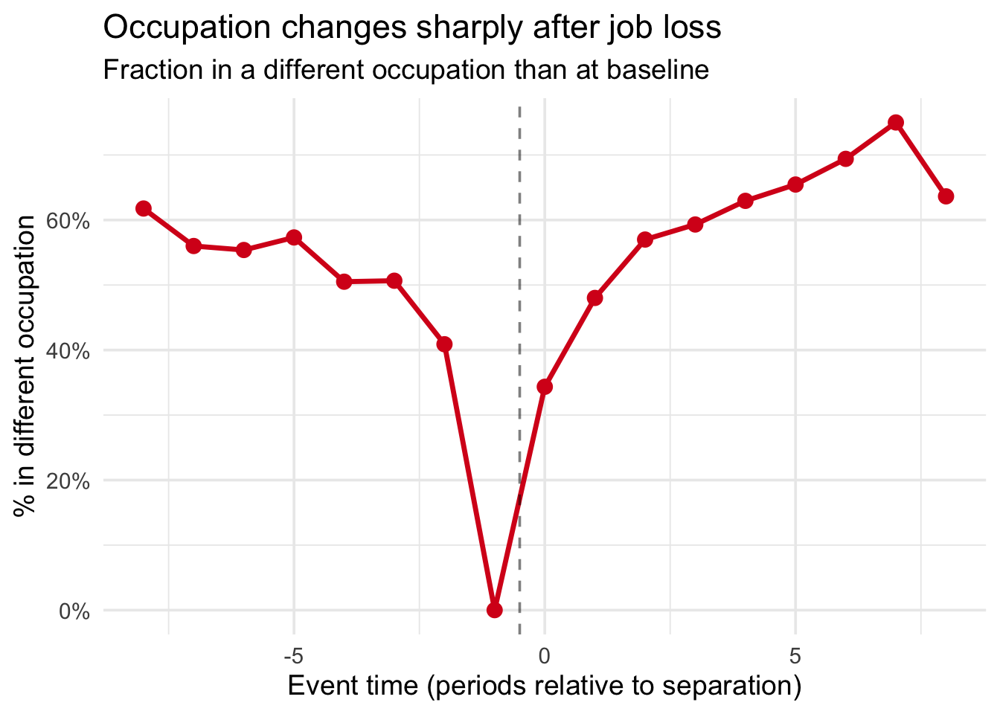

flowchart LR
D["Job Loss"] -->|direct| Y["Wages"]
D -->|bad!| X["Occupation"]
X --> Y
Real-World Application
Wage Scars from Job Loss (NLSY79)
This application demonstrates the bad controls problem using real data from the National Longitudinal Survey of Youth 1979 (NLSY79). The question: how much do wages fall after involuntary job loss?
The setting
Workers who lose their jobs often suffer persistent wage scars — lower wages that persist even years after re-employment. A natural approach is to estimate the wage scar using DiD, comparing separated workers to those who were never separated.
But there’s a catch: job loss also changes occupation. Workers who lose jobs in high-paying occupations frequently end up in lower-paying ones. Occupation is a classic bad control:
- You want to condition on occupation to make parallel trends more plausible (workers in similar occupations have similar wage trends)
- But occupation is causally affected by job loss (the treatment shifts it)
The data
The nlsy_wagescars dataset is a balanced panel of 3,776 individuals from the NLSY79, observed over 9 periods (1984–1993). Treatment is the year of first involuntary job separation.
library(badcontrols)
library(pte)
library(ggplot2)
library(dplyr)
data(nlsy_wagescars)
cat("Panel:", nrow(nlsy_wagescars), "obs,",
length(unique(nlsy_wagescars$id)), "individuals,",
length(unique(nlsy_wagescars$period)), "periods\n")Panel: 33984 obs, 3776 individuals, 9 periodscat("Treatment groups:\n")Treatment groups:g_tab <- table(nlsy_wagescars$G[!duplicated(nlsy_wagescars$id)])
print(g_tab)
0 1 2 3 4 5 6 7 8 9
3415 44 48 42 31 32 34 55 41 34 Occupation changes after job loss
First, let’s verify that occupation is indeed a bad control — that job loss causally shifts it:
treated <- nlsy_wagescars |>
filter(G > 0) |>
mutate(event_time = period - G)
occ_change <- treated |>
group_by(id) |>
mutate(baseline_occ = occ_group[which.min(abs(period - (G - 1)))]) |>
ungroup() |>
mutate(occ_changed = as.integer(occ_group != baseline_occ)) |>
group_by(event_time) |>
summarize(pct_changed = mean(occ_changed), .groups = "drop")
ggplot(occ_change, aes(x = event_time, y = pct_changed)) +
geom_line(linewidth = 1.2, color = "#d7191c") +
geom_point(size = 3, color = "#d7191c") +
geom_vline(xintercept = -0.5, linetype = "dashed", alpha = 0.5) +
scale_y_continuous(labels = scales::percent) +
labs(
title = "Occupation changes sharply after job loss",
subtitle = "Fraction in a different occupation than at baseline",
x = "Event time (periods relative to separation)",
y = "% in different occupation"
) +
theme_minimal(base_size = 14)
After separation, the fraction of workers in a different occupation jumps. This confirms that occupation is affected by treatment — conditioning on it post-separation would absorb part of the wage scar.
Setup
We prepare the auxiliary variable \(W\) (lagged outcome at period 1) for the Covariate Unconfoundedness assumption:
W_df <- nlsy_wagescars |>
filter(period == 1) |>
select(id, W = lwage)
panel <- nlsy_wagescars |>
left_join(W_df, by = "id")Comparing estimators
Method 0: Naive DiD (no covariates)
res0 <- pte_default(
yname = "lwage", gname = "G", tname = "period", idname = "id",
data = panel, d_outcome = TRUE, est_method = "reg"
)
att0 <- extract_att(res0)
cat("ATT:", round(att0$att, 4), " (SE:", round(att0$se, 4), ")\n")ATT: -0.113 (SE: 0.0331 )Method 1: Include occupation directly (bad control)
This conditions on post-separation occupation via regression adjustment. It absorbs the indirect effect through occupation downgrading.
res1 <- pte_default(
yname = "lwage", gname = "G", tname = "period", idname = "id",
data = panel, d_outcome = TRUE,
d_covs_formula = ~occ_group, est_method = "reg"
)
att1 <- extract_att(res1)
cat("ATT:", round(att1$att, 4), " (SE:", round(att1$se, 4), ")\n")ATT: -0.1131 (SE: 0.0272 )Method 2: Pre-treatment covariates only
res2 <- pte_default(
yname = "lwage", gname = "G", tname = "period", idname = "id",
data = panel, d_outcome = TRUE,
xformla = ~afqtscore + female + black + hgc, est_method = "reg"
)
att2 <- extract_att(res2)
cat("ATT:", round(att2$att, 4), " (SE:", round(att2$se, 4), ")\n")ATT: -0.09 (SE: 0.0265 )Method 3: Imputation (our proposal)
Imputes counterfactual occupation \(X_t(0)\) — what occupation would have been without job loss — then runs DiD.
res3 <- bc_att_gt(
yname = "lwage", gname = "G", tname = "period", idname = "id",
data = panel,
bad_control_formula = ~occ_group,
xformla = ~afqtscore + female + black + hgc + W,
est_method = "imputation",
lagged_outcome_cov = FALSE
)
att3 <- extract_att(res3)
cat("ATT:", round(att3$att, 4), " (SE:", round(att3$se, 4), ")\n")ATT: -0.0817 (SE: 0.0027 )Method 4: Doubly Robust ML (our proposal)
Adds a random forest propensity score correction for double robustness.
res4 <- bc_att_gt(
yname = "lwage", gname = "G", tname = "period", idname = "id",
data = panel,
bad_control_formula = ~occ_group,
xformla = ~afqtscore + female + black + hgc + W,
est_method = "dr_ml",
lagged_outcome_cov = FALSE
)
att4 <- extract_att(res4)
cat("ATT:", round(att4$att, 4), " (SE:", round(att4$se, 4), ")\n")ATT: -0.0815 (SE: 0.0258 )Results
results <- data.frame(
Method = c(
"Naive DiD (no covariates)",
"Include occ (bad control)",
"Pre-treatment covariates only",
"Imputation (proposed)",
"DR/ML (proposed)"
),
ATT = c(att0$att, att1$att, att2$att, att3$att, att4$att),
SE = c(att0$se, att1$se, att2$se, att3$se, att4$se)
)
results$CI_lower <- results$ATT - 1.96 * results$SE
results$CI_upper <- results$ATT + 1.96 * results$SE
knitr::kable(
results,
digits = 4,
col.names = c("Method", "ATT", "SE", "CI Lower", "CI Upper"),
caption = "Wage scar estimates (log wage)"
)| Method | ATT | SE | CI Lower | CI Upper |
|---|---|---|---|---|
| Naive DiD (no covariates) | -0.1130 | 0.0331 | -0.1779 | -0.0481 |
| Include occ (bad control) | -0.1131 | 0.0272 | -0.1663 | -0.0598 |
| Pre-treatment covariates only | -0.0900 | 0.0265 | -0.1418 | -0.0381 |
| Imputation (proposed) | -0.0817 | 0.0027 | -0.0869 | -0.0765 |
| DR/ML (proposed) | -0.0815 | 0.0258 | -0.1320 | -0.0310 |
Interpretation
ImportantThe bad control matters
The naive DiD and bad control approaches estimate a wage scar of about 11% (exp(-0.113) - 1). Our imputation and DR/ML methods estimate about 8%.
The 3 percentage point difference is the indirect effect of job loss operating through occupation downgrading. Conditioning on post-separation occupation masks this channel.
The total wage scar from job loss has two components:
- Direct effect (~8%): lower wages even within the same occupation
- Indirect effect (~3%): job loss pushes workers into lower-paying occupations
Standard approaches that include occupation as a control only recover the direct effect. Our methods recover the total wage scar by imputing what occupation would have been without job loss.
Data access
The nlsy_wagescars dataset is included in the badcontrols package:
library(badcontrols)
data(nlsy_wagescars)For the full theoretical treatment, see Caetano, Callaway, Payne, and Sant’Anna (2024).